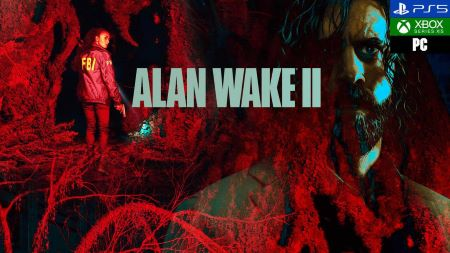
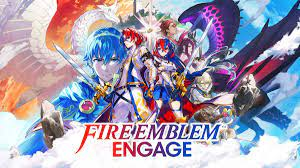
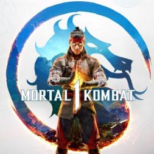
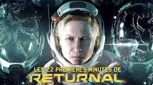

Este 27 de octubre, Remedy Entertainment (Max Payne, Quantum Break) y Epic Games Publishing han estrenado en formato digital Alan Wake 2, un survival horror que está siendo alabado por la crítica. Es un juego diferente a su predecesor lanzado en 2010, que era un thriller de acción, pero no por ello deja de ser una continuación. Así las cosas, ¿hace falta jugar el primer Alan Wake para disfrutar de este?
Fecha: 27/08/2023
Fire Emblem Engage es un videojuego de rol táctico de corte japonés desarrollado por Nintendo e Intelligent System para Nintendo Switch. Forma parte de la veterana saga Fire Emblem, una de las más importantes en ecosistemas de Nintendo. En esta ocasión, esta entrega apuesta por un estilo artístico más colorido que renueva la imagen por otra más vibrante y más impactante, contándonos una historia sobre un dragón divino, Alear, que derrotó a un mal antiguo encarnado por Sombron, en un mundo de fantasía llamado Elyos.
Fecha: 20/1/2023
Género: Tactical RPG
Halloween, la noche de los muertos, está a la vuelta de la esquina y para celebrarlo son muchos los videojuegos que están preparando eventos o contenido especial exclusivo para esta festividad que a día de hoy se celebra en todo el mundo. Uno de estos títulos que quieren proporcionar contenido adicional en Halloween es Mortal Kombat 1, el juego de lucha de NetherRealm Studios que ya anunció hace unos días algo terrorífico para el bolsillo de la comunidad, que no es otra cosa que el lanzamiento de un Fatality de pago que está disponible desde hace unas horas.
28/10/2023
Se trata de un título diferente a todos los anteriores del estudio, que había sido videojuegos twin stick shooters. En esta ocasión, sus creadores han apostado por ofrecernos una aventura en tercera persona de ciencia ficción con toques de terror en la que una mujer parece revivir una y otra vez una serie de traumáticas experiencias en un planeta lleno de criaturas surgidas de la más retorcidas de las pesadillas. Hablamos del juego más ambicioso del equipo, un shooter en tercera persona de gran presupuesto.
Fecha: 15/2/2023
Género: Aventura de acción / Terror
